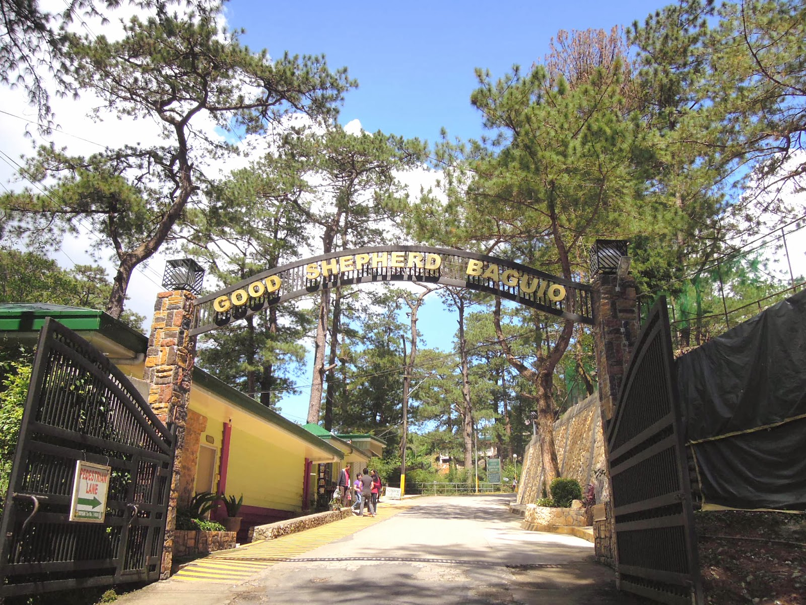

Visitor Information
📍 Location: 15 Gibraltar Road, Mines View, Baguio City 2600
🕕 Operating Hours: 8:00 AM – 4:00 PM
💰 Entry Fee: Free
🎁 Famous For: Ube Jam, Strawberry Jam, Peanut Brittle
Visit the Good Shepherd Convent
Home of Baguio’s famous ube jam and a peaceful convent supporting local youth through scholarship programs.
About Good Shepherd Convent
The Good Shepherd Convent is known across the Philippines for its delicious local products, including ube jam, strawberry jam, and peanut brittle. Each purchase helps support the education of Cordillera youth through the Good Shepherd Scholarship Program.
Map Location
This interactive map shows the exact location of Good Shepherd Convent.
Nearby Spots & Attractions
- 🌸 Mines View Park (5 mins walk)
- 🛍️ Mines View Souvenir Stalls
- ☕ Coffee Shops along Outlook Drive
- 🐎 Horseback Riding Area nearby